The SVOMPT train · Subject → Verb → Object → Manner → Place → Time
Every English sentence rides this line. Build 10 sentences — from simple to more advanced, all about food shopping.
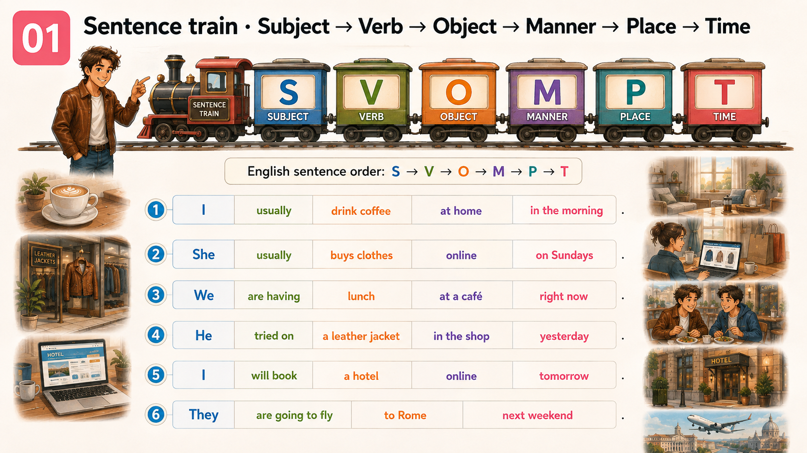
Ex 1 · click the words in order (S → V → O → M → P → T)
Rule: subject first, then verb, then object, then manner (adverb), then place, then time. Frequency adverbs (usually / often / always) go before the main verb.
___________________________
__________________
_____________________
_________________________________
_____________________
________________________
___________________________
___________________________
_________________________________
___________________________
Speak · build 3 of your own
Rule: use the SVOMPT order — subject first, verb next, then object, adverb, place, time. Frequency adverbs go before the main verb («I always buy…»), but AFTER to be («The bread is always fresh»).
Build a sentence about your weekly food shopping — subject + verb + item + adverb + place + time.
Build a sentence about your fridge right now — what is in it + how much.
Build a sentence about your next dinner plan — subject + will/going to + verb + food + place + time.
01B
Ex 2 · Fix the question · 10 different question types
Ask Me Anything — but the questions come broken. Pick the correct form.
Rule: question order = Wh-word + auxiliary (do / does / did / is / are / can / have) + subject + verb. Never «Where you buy?» — always «Where do you buy?». With to be: no auxiliary — «Where is the shop?».
___ your bread?
___ breakfast?
___ dinner every day?
___ the dairy shelf?
___ a kilo of tomatoes?
___ these apples?
___ anything on discount last week?
___ a loyalty card, by any chance?
___ a sample, please?
___ to the market this weekend?
Speak · ask me the same 10 questions
Rule: full sentence, no bare «yes / no» in the answer — always add a reason with because / for example.
Ask each of the 10 questions above out loud, to me. I'll reply — then swap.
Make one question of your own for each auxiliary you meet (do / does / did / is / are / can / have).
01C
Ex 3 · Put the frequency adverb in the right place · 10 items
Same sentence, three positions. Pick where the adverb belongs.
Rule: frequency adverbs (always · usually · often · sometimes · rarely · never) go BEFORE the main verb, but AFTER to be. Positions: · «I often buy fresh bread.» (before main verb) · «She is always late for dinner.» (after «to be») · Never «I drink often tea» / «She always is late».
I ___ tea with breakfast.
She ___ late for the family dinner.
I ___ full-price cheese — I wait for the discount.
We ___ food shopping on Saturdays.
The market stalls ___ open until six.
On Sundays I ___ pancakes for the family.
My brother ___ at home.
The queue at the deli counter on Fridays ___ short.
I ___ by card at the supermarket, never cash.
I ___ the shopping list — I write it on my phone.
Speak · 5 real habits with frequency adverbs
Rule: pick one adverb per sentence, put it in the right slot. «I always buy…», «I never take…», «My wife usually makes…».
One thing you always put in your basket at the supermarket.
One thing you usually forget to buy.
One thing you rarely eat at home.
One thing you never buy full-price.
One thing you sometimes cook when your wife is out.
02
Vocab warm-up · 24 food words
Three mini-decks: fresh produce · dairy/meat/bakery · cupboard staples + drinks. Tap a card to flip. ▶ to hear the word.
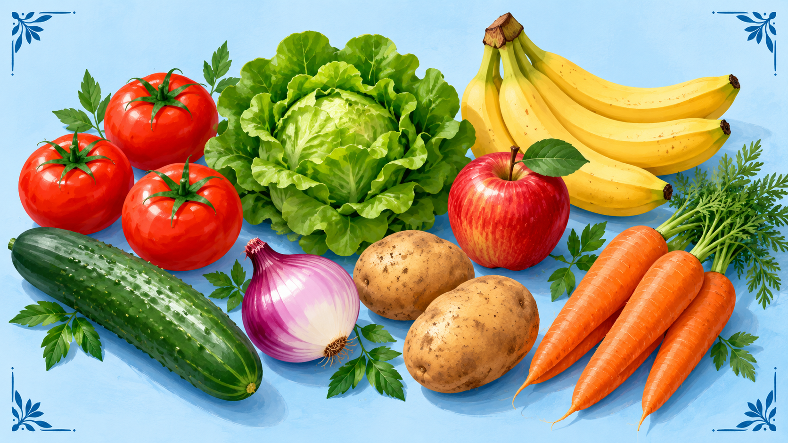
Deck A · Fresh Produce · fruit & veg
How it works: tap a card to flip. Image + word on the front, definition + example on the back. ▶ = hear the word. Most fruit / veg = countable («three apples»), but lettuce and garlic = usually uncountable.
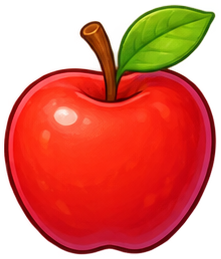
round fruit, green or red, crunchy
I eat an apple every day.
soft red fruit used in salad
A kilo of ripe tomatoes, please.
long green veg, mild taste
One cucumber for the salad.
strong-smelling veg with layers
Two big onions for the soup.
brown root vegetable
A kilo of potatoes for the roast.
long orange root veg
Fresh carrots for the stew.
green leaves for salad
A head of lettuce for tonight.
long yellow fruit
A bunch of bananas for the week.
Deck A · Ex 1 · put the right produce word
Rule: read the sentence, pick the produce word that fits. Countable «apples / tomatoes / onions» → many. Uncountable «lettuce / garlic» → some.
I eat one green ___ every morning with my porridge.
Half a kilo of ripe ___ for the salad, please.
One long ___ — the small ones are more crunchy.
Fry two ___ before you add the meat.
A kilo of ___ for the roast on Sunday.
Fresh ___ — the small ones are the sweetest.
One head of ___ for a Caesar salad.
A bunch of ___ lasts my kids about three days.
Speak · 8 questions about YOUR fruit & veg
Answer formula: «I usually buy…», «I've got about X in the fridge…», «For me, the best one is…» + one detail with because / for example.
Which do you eat more — apples, bananas, or oranges? Why?
Tomatoes: hot-house from the supermarket or from the market? Which taste better?
How many kinds of vegetables did you eat this week? Name them.
Do you like lettuce and salad leaves, or do you find them boring?
Potato lover or potato hater? Boiled, roasted, mashed — which is your favourite?
Do you eat carrots raw or only cooked? Why?
What's your favourite way to eat a cucumber — salad, sandwich, or straight from the fridge?
What's the last piece of fruit or veg you bought this week? Where from?
Dialogue · using produce clichés · Denis at the greengrocer's
Watch for these clichés: «Half a kilo of…», «Are these ripe?», «Can I taste one?», «Not too soft, please», «I'll take a kilo», «Anything else?». Read aloud, then swap roles.
FarmerMorning! What can I get you today?
DenisGood morning. A kilo of tomatoes, please. Are these ripe?
FarmerVery ripe — picked yesterday morning. Try one, if you like.
DenisMmm, sweet. Perfect. And half a kilo of cucumbers.
FarmerSmall or large?
DenisSmall ones, please — they're more crunchy in a salad.
FarmerRight. Anything else?
DenisYes — three onions and a big bunch of carrots. And a lettuce, if you have a fresh one.
FarmerThis one came in an hour ago. Very green.
DenisGreat. How much altogether?
FarmerSix pounds fifty. Cash or card?
DenisCash, please. Here you go — and keep the change.
FarmerThank you! See you next Sunday.
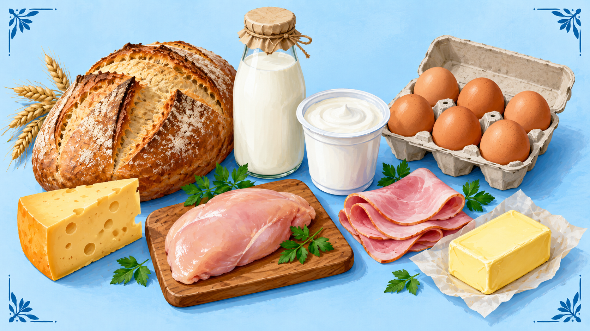
Deck B · Dairy, Meat & Bakery
Rule: most of these are uncountable (bread / cheese / milk / butter) — you say «some milk», not «a milk». Countable: «two eggs», «three loaves of bread».
baked food from flour and water
A loaf of brown bread, please.
firm dairy food made from milk
Half a kilo of yellow cheese.
white liquid from a cow
A litre of semi-skimmed milk.
thick creamy dairy food
A carton of Greek yoghurt.
oval food from a chicken
Six free-range eggs.
white meat from a chicken
A kilo of chicken breasts.
sliced pink pork meat
200 grams of ham, sliced thin.
yellow fat made from milk
A pack of salted butter.
Deck B · Ex 1 · put the right dairy / meat / bakery word
Rule: uncountable → some / a bit of («some milk», «a bit of cheese»). Countable → a number («three eggs», «two loaves»).
Fresh brown ___ from the bakery, still warm.
Half a kilo of yellow ___, sliced, please.
One litre of semi-skimmed ___ for the tea.
A carton of Greek ___ — thick and plain.
Six free-range ___ — I make an omelette every morning.
A kilo of ___ breasts for the roast.
200 grams of ___, sliced thin, please.
A pack of salted ___ — for toast in the morning.
Speak · 8 questions about YOUR dairy / meat / bakery habits
Do you drink milk in your tea and coffee, or black?
Yoghurt lover, or not really your thing?
Cheese: hard yellow, soft white, or blue — which do you buy most?
Chicken every week, or do you prefer other meat / fish?
Do you buy sliced bread or a whole loaf? Why?
Butter or a spread — what's on your toast?
Ever bought food you had to throw away? What was it?
Dialogue · using Dairy / Meat clichés · Denis at the deli counter
Watch for these clichés: «Half a kilo of…», «Sliced thin, please», «Anything else from the counter?», «Fresh today?», «Would you like a taste?», «Can I have a sample?»
AssistantGood morning! What can I get you from the counter?
DenisGood morning. Half a kilo of that yellow cheese, please.
AssistantThe mild one, or the mature?
DenisThe mature. Can I have a small taste first?
AssistantOf course. Here you go.
DenisPerfect. And 200 grams of ham, sliced thin, please.
AssistantNot too thick? OK. Anything else from the counter?
DenisOne roast chicken, if you've got a small one. Is it fresh today?
AssistantCooked this morning. That's twelve pounds forty for everything.
DenisGreat, thank you. Card at the till?
AssistantYes, take this ticket to checkout number three.
DenisThanks. Have a good day!
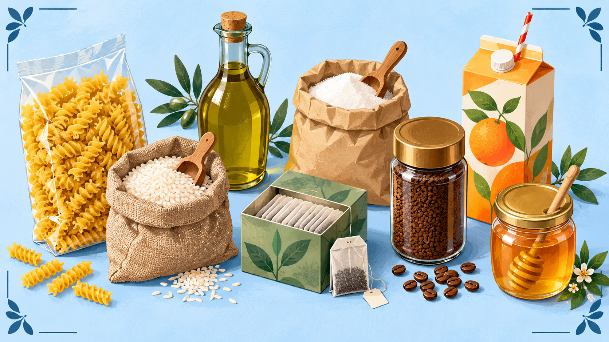
Deck C · Cupboard staples + drinks
Rule: most cupboard food is uncountable — «some rice, some sugar, some oil». Say «a bag of rice», «a bottle of oil», «a jar of honey» when you need to count.
Italian dry noodles / shapes
A packet of pasta for dinner.
small white grains, side dish
A bag of long-grain rice.
liquid fat for cooking
A bottle of olive oil.
sweet white crystals
A bag of white sugar.
hot drink from dry leaves
A box of English breakfast tea.
hot drink from roasted beans
A jar of ground coffee.
liquid squeezed from fruit
A carton of orange juice.
sweet thick food from bees
A small jar of honey for tea.
Deck C · Ex 1 · put the right cupboard / drink word
Rule: pasta / rice / sugar / tea / coffee = uncountable. Bottle → for oil / juice. Jar → for honey / coffee. Bag → for rice / sugar. Packet → for pasta / tea.
A packet of ___ — I'll cook spaghetti tonight.
One bag of long-grain ___ for the curry.
A bottle of olive ___ — the green one, please.
Just a small bag of ___ — we don't drink much sweet tea.
One box of English breakfast ___, please.
A jar of ground ___, medium roast.
A carton of orange ___, freshly squeezed.
A small jar of ___ for my tea in the evening.
Speak · 8 questions about YOUR cupboard & drinks
Answer formula: «I usually…», «Same here…», «Not really my thing…» + one detail or reason.
Pasta or rice — which do you cook more often?
Olive oil or sunflower oil for cooking? Why?
How much sugar do you have in your tea or coffee?
Tea drinker or coffee drinker in the morning?
Fresh juice or bottled juice — which do you buy?
Do you have honey at home? What do you eat it with?
How often do you check the expiry date in your cupboard?
What's one cupboard item you always run out of?
Dialogue · using cupboard clichés · Denis at the checkout with a full trolley
Watch for these clichés: «Anything else?», «Have you got a loyalty card?», «Card or cash?», «Would you like a receipt?», «Any bags?», «There's a discount on that.»
CashierGood afternoon! Big shop today?
DenisYes, weekly one. Sorry, the trolley is full.
CashierNo problem. Let me scan… pasta, rice, olive oil, tea, coffee, honey, sugar. That's it?
DenisYes — and one carton of orange juice, please. I forgot it.
CashierRight, added. The pasta is on offer — three for two, so I'll take one off.
DenisOh, nice — thank you.
CashierHave you got a loyalty card?
DenisYes, one second. Here you go.
CashierPerfect. That's thirty-two pounds forty. Any bags?
DenisNo, thanks — I brought my own.
CashierCard or cash?
DenisCard, please. Contactless.
CashierDone. Receipt by email?
DenisYes, please. Have a good afternoon!
Match · word → short definition
How it works: tap a word on the left, then tap its meaning on the right. Wrong pair — shake. Right pair — locks green.
02+
Food-shopping clichés · fixed phrases you must know by heart
Every grocery run runs on 5-second phrases. Learn these — you'll use them every time.
Rule: in a food shop you almost never build a new sentence — you plug in a fixed phrase. Below are the 6 «buckets» a food shopper needs. Tap any line to hear it.
👋 Walking in · assistant asks
Can I help you find anything?
Are you looking for anything special today?
Let me know if you need help.
Take your time.
🙋 Your reply · what you need
I'm just picking up a few things.
Do you have any fresh salmon today?
I'm looking for gluten-free bread.
Where's the dairy section?
⚖ At the counter · meat / cheese / bread
Half a kilo of that cheese, please.
Could I have 200 grams of ham?
Not too thick, please.
Two loaves of the brown one.
Fresh today?
💰 Price & offers
How much is this?
Is there an offer on the yoghurt?
Is this in the meal deal?
What's the price per kilo?
💳 At the checkout
That's everything, thanks.
No bag, thanks — I brought my own.
Card, please. Contactless.
Would you like a receipt?
Email receipt, please.
🔁 Something's wrong
Excuse me, this yoghurt is past the date.
This apple is bruised — can I swap it?
The label says £2 but it scanned as £3.
I'd like a refund on this, please.
Speaking rule for today: every food-shop answer starts with one of these fixed phrases — never a bare «yes / no». Phrase → then your own thought.
Speak · use the phrases live
You enter a supermarket. Assistant: «Can I help you find anything?» — reply 3 different ways.
The cheese counter has 4 kinds. Ask for half a kilo and a taste — 2 different ways.
You want to check the price of tomatoes and see if there's an offer — ask 2 questions in a row.
You're at the till. Full checkout dialogue: 4 lines from you, from «That's everything» to goodbye.
The yoghurt you just opened at home is off. Come back and start the return — 3 lines minimum.
Read aloud, then tick True / False / Not Stated. Then discuss.
Listen for: containers (a bottle, a packet, a jar, a carton, a tin, a loaf) + food (bread, cheese, milk, eggs, tomatoes, apples) + shopping verbs (picks up, drops in, checks the list, pays) + prices in pounds.
Story · 130 words · A2
On Saturday morning Denis goes to the supermarket. His wife wrote a shopping list on a small piece of paper. He puts it in his jacket pocket and takes a big basket at the door.
First he goes to the bakery corner. He picks up a loaf of brown bread and drops it in the basket. Next — the dairy shelf: a bottle of milk, a carton of yoghurt, a packet of cheese. He also takes a jar of honey for tea.
Then fruit and vegetables: six red apples, three tomatoes, one small cucumber. Finally a tin of tuna for the cat.
At the cash desk there is a short queue. He pays fourteen pounds by card and takes the receipt. «Have a nice weekend!» — the cashier smiles.
True / False / Not Stated
1. Denis's wife wrote the shopping list.
2. Denis buys white bread.
3. He takes a tin of tuna for the cat.
4. The cashier's name is Anna.
5. He pays by card, not cash.
Exchange · your own food shopping
Answer formula:Cliché phrase → your own thought → because…. Minimum one phrase from the toolkit in every answer.
Who usually writes the shopping list at your home — you or someone else?
Basket or trolley — which do you take, and does it depend on what you buy?
How often do you buy fresh fruit and vegetables — every day, once a week, rarely?
Supermarket, small local shop, or online delivery — which is your default? Why?
What's one thing you always forget to buy? And one thing you always buy too much of?
Listen for: market fixed phrases — «Two kilos of the ripe ones / Can I taste one? / Cash only / Fresh today?». Underline them as you read.
Story · 130 words · A2
Denis walks to the local farmers' market on Sunday morning. It's bright and the stalls smell of fresh bread and strawberries.
He goes straight to his favourite stall for tomatoes. «Good morning! Two kilos of the ripe ones, please» — he says. The farmer picks the best ones and gives him one to taste. «Mmm, sweet. Perfect.» «Cash only, my friend» — the farmer smiles. Denis pays six pounds — no card here.
He also buys a loaf of sourdough at the bakery stall, fresh cheese from the dairy stand, and a small jar of honey.
He carries everything home in a big canvas bag. It's heavy, but every item was chosen by hand — and by nose.
True / False / Not Stated
1. Denis goes to the market on Sunday morning.
2. The market is 15 minutes from Denis's flat.
3. Denis pays for the tomatoes by card.
4. He buys bread, cheese and honey.
5. He takes everything home in a plastic bag.
5 Wh-questions · discuss
What does Denis buy first at the market?
Why does the farmer give him a tomato to taste?
How does he pay at the tomato stall — and why?
What three other items does he buy after the tomatoes?
Have you ever been to a farmers' market? Tell the story.
Exchange · market vs supermarket
Use these clichés:«Actually, I think…», «It depends», «For me, honestly…», «Not really my thing».
Do you go to farmers' markets, or is it all supermarket for you?
Where do you get the freshest fruit and veg in your city?
Cash or card at the market — what do sellers usually prefer where you live?
Is it worth paying a bit more at the market for better taste? Why or why not?
What's the last thing you bought at a market — how was it different from the supermarket version?
04+
Three City Stories · three ways of buying food
Three characters, three very different Saturday food-shopping styles. Listen · read · compare · decide whose approach is closest to yours.
Listen for: each character has a fixed phrase — Anna «I haven't been inside a supermarket in months», Sergey «I need to smell the tomato», Maya «I never shop without a list». Watch how they justify with because / for me / honestly.
A
Anna · 25 · marketing manager · Moscow
🛒 Online groceries · «my fridge is a delivery box»
«I honestly haven't been inside a supermarket for six months,» — Anna says. «On Sunday evening I open the delivery app, tap 'reorder last week', and everything comes to my door in an hour.
I buy almost the same list every time: brown bread, milk, three yoghurts, a jar of honey, a packet of cheese, six apples, one salmon fillet. Boring? Maybe. But my Saturday morning stays mine — no queue, no heavy bags, no rain.
Yes, I pay a small delivery fee. Yes, sometimes they send tomatoes that look a bit sad. But if I add up the time I save, it's the best deal of my week.»
S
Sergey · 45 · engineer · St Petersburg
🥬 Sunday market man · «I need to smell the tomato»
«I never buy food online,» — Sergey says. «I'm 45, I know my food, and I need to touch it. The tomato in the photo is always the best one — the one in the box is always the saddest.
Every Sunday at eight in the morning I walk to the farmers' market near my flat. The lady on stall seven remembers me — she saves me the best peaches. I choose every apple, smell every loaf of bread, ask about the cheese.
It takes an hour and a half. My bag is heavy on the way home. But I know exactly what I'm eating for the whole week — and that, for me, is worth the time.»
M
Maya · 32 · freelance designer · Kazan
🏷 Meal-plan warrior · «I never shop without a list»
«I never go to the shop without a list,» — Maya laughs. «Every Sunday morning I plan seven dinners for the whole week, then I write exactly what I need — nothing more, nothing less.
One trip, one basket, one receipt. Total: about three thousand five hundred roubles a week. My friends think I'm boring, but my food budget is half of theirs, and I still eat well.
My favourite trick: end-of-day discounts. Bread, yoghurt, fish — after eight in the evening the shop drops the price by fifty percent. You just need patience — and a good list.»
Compare · discussion questions
Speaking rule: start each answer with «I'm more like…», «Honestly, closer to…», «For me, it's a mix of…».
Whose approach is closest to yours — Anna's, Sergey's, or Maya's? Why?
Which approach do you think is cheapest in the long run? Why?
Anna returns items she doesn't like. Have you ever returned food? Was it easy?
Sergey says «I need to smell the tomato». Which food do you always want to touch before buying?
Maya keeps a shopping list. Do you plan before you shop, or buy on impulse?
If you had to teach one of them a new trick — what would you tell them?
Exchange · your own shopping style
Answer formula: pick Anna / Sergey / Maya → give one habit that matches → give one habit that doesn't.
«I'm more Anna / Sergey / Maya — because…»
Which is the biggest food-shopping mistake for you personally — impulse, buying too much, or paying full price?
Would you rather waste food or waste money when shopping? Explain.
What's the smartest food-shopping trick you've discovered this year?
05
Grammar recap · 7 mini-drills through food shopping
Each block — one topic, 4-6 sentences. Click the right option.
5A · Present Simple vs Continuous
Rule:Present Simple = habits / facts («I usually have breakfast at 8»). Present Continuous = right now / around now («Right now I am cooking pasta»).
I usually ___ breakfast at 8 in the morning.
Right now I ___ pasta for dinner.
Right now Denis ___ the ripest tomatoes at the market.
The market ___ at 7 a.m. every Sunday.
He ___ fresh bread — not the packaged one.
We ___ lunch at home right now.
5B · Future · will vs going to
Rule:'ll = decision now («I'll take a kilo»). going to = plan you already have («Tomorrow I'm going to make lasagne»). Weather / evidence = going to («It's going to rain»).
— Which cheese? — Hm… I ___ half a kilo of that one, please.
Look at those clouds — it ___ in a minute. Let's finish shopping quickly.
Tomorrow I ___ lasagne — I already bought all the ingredients.
— Please send me the receipt. — Sure, I ___ it by email right now.
Next Sunday we ___ a big family dinner — the menu is planned.
This bag is heavy! — Don't worry, I ___ you.
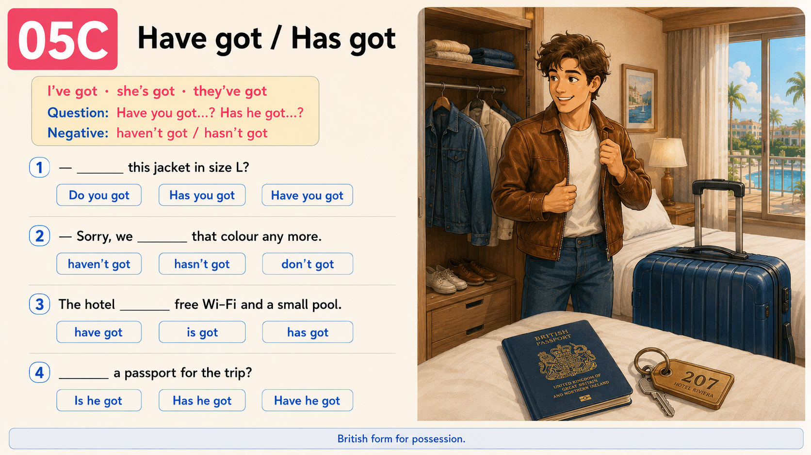
5C · Have got / Has got
Rule: I / you / we / they → have got. He / she / it → has got. Question: Have you got…? Has she got…? Negative: haven't got / hasn't got.
— ___ fresh strawberries today?
— Sorry, we ___ any left today.
The shop ___ a good bakery — try the sourdough.
___ the shopping list on his phone?
5D · Wh-questions · price, quantity, location
Rule: full form Wh-word + do/does + subject + verb. With to be: Wh-word + am/is/are + subject. Prices → How much is / are. Quantity of countable → How many. Quantity of uncountable → How much.
___ a bottle of olive oil?
___ eggs do you need for the recipe?
___ cheese do you prefer — mild or mature?
___ the dairy shelf?
___ milk do you drink in a week?
5E · There is / are + Can I…?
Rule:There is + one thing. There are + more than one. Polite request in a shop = Can I + verb…? (Can I taste, Can I pay, Can I have…).
___ a long queue at the deli counter.
___ three cash desks open today.
___ that cheese, please?
___ by card here?
5F · This / that / these / those
Rule:this / these — near me. that / those — over there, farther. this / that — singular. these / those — plural.
Can I try ___ grapes, please? (holding them)
How much is ___ watermelon over there?
I don't like ___ apples on the top shelf — they look soft.
Look — ___ loaf is still warm. I'll take it.
5G · Plurals (irregular) + Apostrophe 's
Rule: irregular plurals: loaf → loaves · child → children · person → people · knife → knives. Countable «people» → many, not much. Possession 's: singular = Denis's, plural ending in -s = parents'.
These ___ are fresh today — they came out an hour ago.
The ___ love strawberries — buy a big punnet.
There are ___ at the market today.
___ shopping list is really long today.
My ___ fridge is always full.
06
Reading 3 · Back home · unpacking the shopping
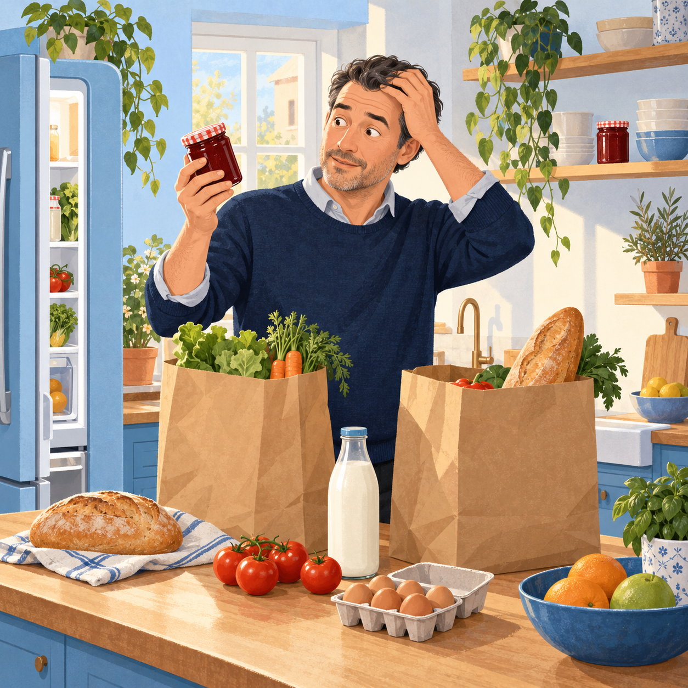
90 words. Kitchen phrases + prepositions of place.
Listen for:«on the counter / in the fridge / on the top shelf / in the fruit basket» — prepositions of place. Notice which food goes where.
Story · 90 words · A2
Denis walks in with two heavy bags. His arms hurt.
He puts the bread on the counter, the eggs on the top shelf, the milk in the fridge door, the tomatoes in the fruit basket. The yoghurt goes at the front — «eat first».
Then he opens the cupboard and finds a jar of jam he already had at home. He forgot to check!
His wife laughs. «Next time, take a list, my love.» «I will,» — Denis says. «Next Saturday, I promise.»
True / False / Not Stated
1. Denis's bags are heavy.
2. He puts the milk on the top shelf.
3. He already had a jar of jam at home.
4. Denis's wife was cooking when he came in.
5. He promises to take a list next Saturday.
Exchange · your fridge and pantry
Clichés to use:«Honestly…», «It depends», «Same here», «Not really my thing».
Who usually unpacks the shopping in your home?
How is your fridge organised — by type, by expiry date, or is it chaos?
Where do you keep bread — counter, cupboard, bread bin, or fridge?
Do you ever buy something you already have at home? What was the last time?
Do you check the expiry dates when you unpack, or only when you cook?
Rule: at the counter you almost never build a new sentence — you plug in one of 5 phrases. «Half a kilo of…» = order weight · «Sliced thin, please» = how you want it cut · «Fresh today?» = check quality · «Anything else?» = the assistant asks.
⚖ Weighing
Half a kilo of that cheese, please.
Could I have 200 grams of ham?
Just a small piece — 100 grams.
🔪 Cutting / slicing
Sliced thin, please.
Not too thick.
In one piece, please — I'll slice at home.
🌿 Freshness
Is this fresh today?
When was this delivered?
Can I have a taste, please?
💰 «How much»
How much is it per kilo?
How much is that in total?
Is it on offer?
➕ Extras
Anything else from the counter?
Yes — and a roast chicken, please.
No, that's all, thanks.
💳 Payment
Take this ticket to the till.
Pay at the checkout, please.
Card, please. Contactless.
Speak · order it live
Order 200 grams of ham, sliced thin — 2 different ways.
Ask for half a kilo of mature cheese + ask for a taste — full sentence.
Assistant: «Fresh salmon today?» — reply 3 different ways (yes / not sure / ask when it was delivered).
Ask the price per kilo and if there's an offer today — full sentences.
Answer formula:polite verb (Could I / Can I) → weight + food → how you want it → please.
07
Reading 4 · Sunday evening · planning next week's meals
Listen for: future forms — «I will pop to the local shop / I'm going to order online / He is going to cook». Notice which one fits which situation.
Story · 110 words · A2
On Sunday evening Denis sits at the kitchen table with his laptop. He is planning seven dinners for the whole week.
He writes a shopping list on his phone — pasta on Monday, chicken on Tuesday, fish on Wednesday, soup on Thursday, pizza on Friday, roast on Saturday, leftovers on Sunday.
He is going to order the heavy items — potatoes, milk, rice, oil — online for delivery on Tuesday morning. For fresh bread and salad, he will pop to the local shop on the way home from work.
Total budget for the week: about five thousand roubles. «Not bad,» — he says. «And no wasted food this time.»
5 discussion questions
How many dinners is Denis planning for the week?
Which items is he going to order online, and why those?
What is he going to buy at the local shop instead?
What is his weekly food budget?
Do you plan the whole week's meals, or decide day-by-day?
Exchange · your weekly food routine
Use: future forms — «I'm going to… / I'll…» + weekly quantifiers «once a week / twice a week / every Sunday».
Do you plan meals for the whole week, or day by day?
What's your weekly food budget — do you stick to it?
Online delivery vs the local shop — which do you use more? Why?
Which day of the week is your «big shop» day?
Have you ever wasted a lot of food because you bought too much? Tell the story.
07+
Grocery delivery app English
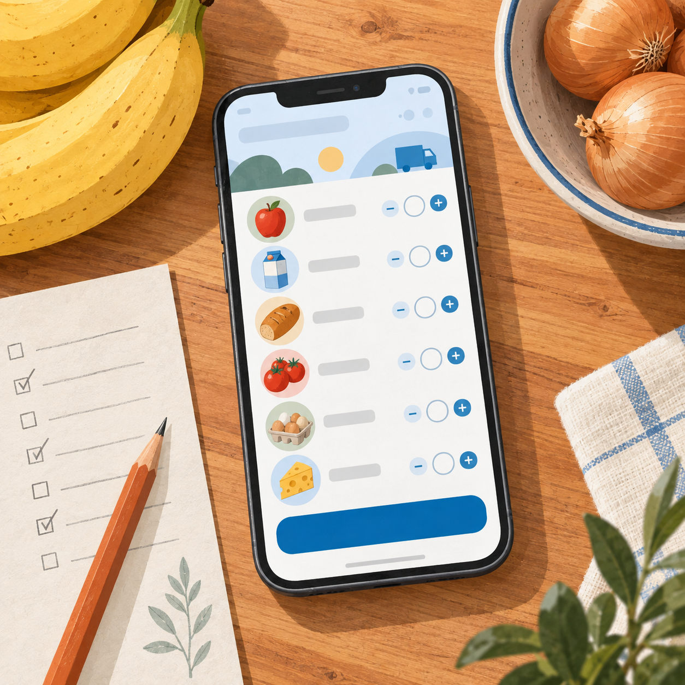
Useful phrases · delivery slots · substitutes.
Remember: a delivery slot = the time window when the shop brings your order. A substitute = a different product they send if yours is out of stock. «Minimum order» = the smallest amount you must buy for delivery.
❓ Useful phrases
Is delivery available in my area?
What's the delivery slot?
Is there a minimum order?
How much is the delivery fee?
🗓 Timing
I'll book a slot for Tuesday morning.
I'm going to add three more items.
The next available slot is tomorrow evening.
🔄 Substitutes
If they don't have brown bread, they usually substitute white.
Please, no substitutes.
The app sent me a different brand — same price.
Speak · your next delivery
Ask 3 delivery questions in a row about the area, the slot, and the minimum order.
Describe 3 items you'll add to your basket next — full sentences with quantity.
Name 3 substitute rules you'd set for your own delivery (no substitutes on X / same brand only on Y / etc.).
Rule: spontaneous decision → will. Existing plan → going to. Ask about availability → Is there…? / Have you got…?
07.5
Listening · listen and react
Three mini-tasks on audio. Press ▶, then answer aloud.
7.5A · Listen & tick · what you hear
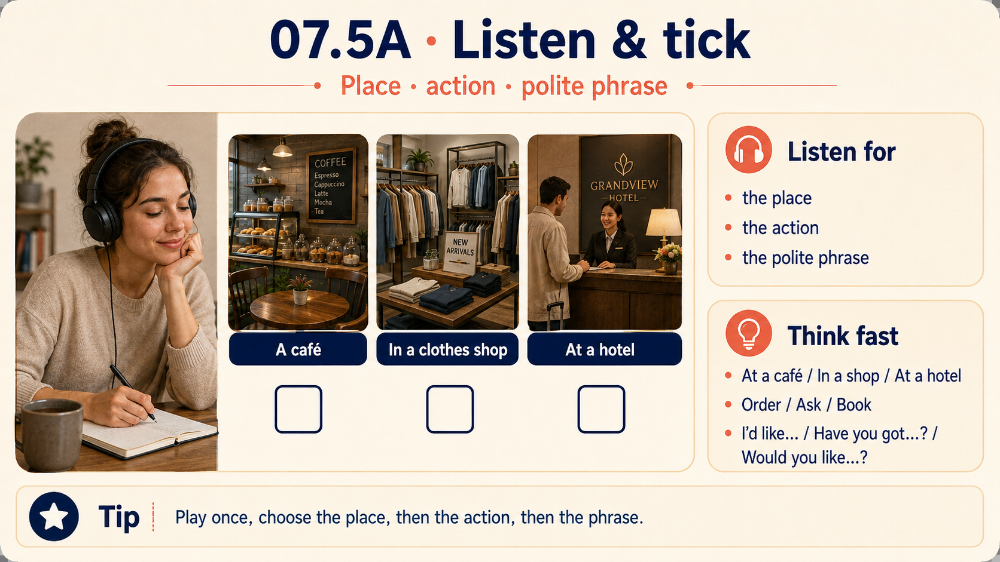
Listen for: the place (market, supermarket, deli counter), the action (order, ask, weigh, pay), and any polite phrase (Half a kilo of… / Have you got… / Fresh today?). Play once, then tick.
Where is this person?
What does the customer want?
What is the person asking about?
Why does the customer ask about the expiry date?
The customer means:
7.5B · Listen & respond · react to what you hear
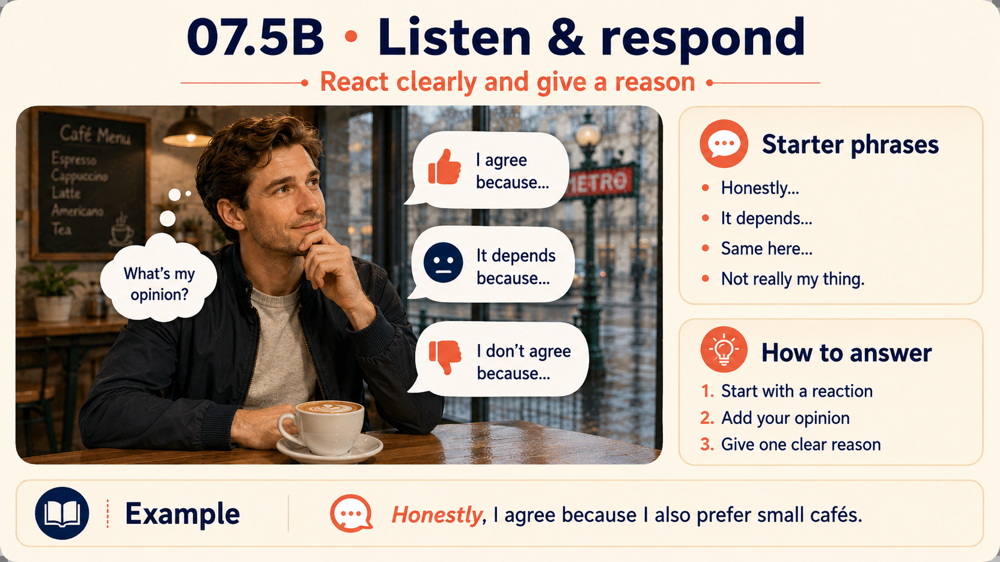
How to respond: pick a starter — «Same here… / Not really my thing… / Honestly, both — but…» — then 2 sentences with your own reason (because / for example).
Your response? Do you agree with this food shopper?
What's your reaction — the same weekly routine, or opposite?
Do you have a market like that? Or is the supermarket enough?
Big weekly shop or small daily runs — what are you?
Would you do the same about substitutes? Why or why not?
7.5C · Dictation · listen and write the missing word
How it works: play the sentence, type the missing word, hit Check. You can replay as many times as you need.
I'll take a kilo, please.
One of tomatoes, please.
Can I have the by email, please?
One loaf of bread, please.
Is this salmon today?
Exchange · your own listening
Which was the easiest for you — A, B, or C? Why?
Which English accent do you understand best in a shop — British, American, other?
What do you do when a shop assistant says a word you don't understand — guess or ask?
Rule: answer with «For me / Honestly / It depends…» + one clear reason.
07B
Food shopping · containers, measures, prices
How food is packaged, how it's measured, and how you buy it at the till. Big block — 3 vocab decks + 3 exercises + full cash-desk dialogue.
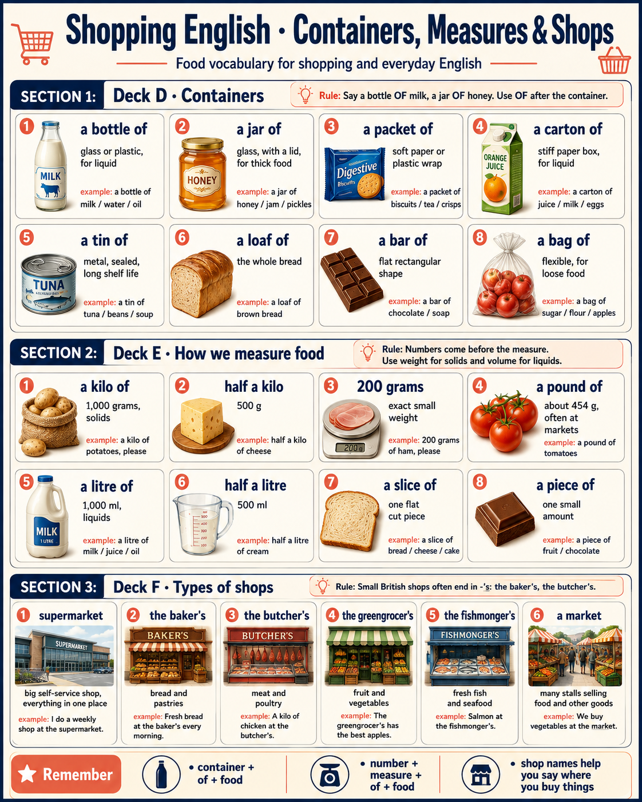
Deck D · Containers
Rule: food usually comes in a container. Say «a bottle OF milk», «a jar OF honey» — never «a bottle milk». Both singular. Countable.
a bottle of
/ˈbɒtl əv/
container
glass or plastic, for liquid
a bottle of milk / water / oil
a jar of
/dʒɑː əv/
container
glass, with a lid — for thick food
a jar of honey / jam / pickles
a packet of
/ˈpækɪt əv/
container
soft paper / plastic wrap
a packet of biscuits / tea / crisps
a carton of
/ˈkɑːtn əv/
container
stiff paper box, for liquid
a carton of juice / milk / eggs
a tin of
/tɪn əv/
container
metal, sealed — long shelf life
a tin of tuna / beans / soup
a loaf of
/ləʊf əv/
container
the whole bread, unsliced
a loaf of brown bread
a bar of
/bɑː əv/
container
flat rectangular shape
a bar of chocolate / soap
a bag of
/bæɡ əv/
container
flexible, for loose food
a bag of sugar / flour / apples
Deck E · How we measure food
Rule: in the UK metric (kilograms, litres) and imperial (pounds, pints) live side by side. Weight = for solids. Volume = for liquid. Numbers before measure, food after.
a kilo of
/ˈkiːləʊ əv/
weight
1 000 grams · solids
a kilo of potatoes, please
half a kilo
/hɑːf ə ˈkiːləʊ/
weight
500 g · small amount
half a kilo of cheese
200 grams
/ˈtuː ˈhʌndrəd ɡræmz/
weight
exact small weight
200 grams of ham, please
a pound of
/paʊnd əv/
weight · UK
≈ 454 g · often at markets
a pound of tomatoes
a litre of
/ˈliːtə əv/
volume
1 000 ml · liquids
a litre of milk / juice / oil
half a litre
/hɑːf ə ˈliːtə/
volume
500 ml · smaller bottle
half a litre of cream
a slice of
/slaɪs əv/
portion
one flat cut piece
a slice of bread / cheese / cake
a piece of
/piːs əv/
portion
any small amount
a piece of fruit / chocolate
Deck F · Types of shops
Rule: UK small shops end in -'s — at the baker's, at the butcher's. Supermarket = one big shop for everything.
supermarket
/ˈsuːpəmɑːkɪt/
shop
big self-service shop, everything in one place
I do a weekly shop at the supermarket.
the baker's
/ˈbeɪkəz/
shop
bread + pastries only
Fresh bread at the baker's every morning.
the butcher's
/ˈbʊtʃəz/
shop
meat and poultry
A kilo of chicken at the butcher's.
the greengrocer's
/ˈɡriːnˌɡrəʊsəz/
shop
fruit and vegetables
The greengrocer's has the best apples.
the fishmonger's
/ˈfɪʃˌmʌŋɡəz/
shop
fresh fish and seafood
Salmon at the fishmonger's, straight from the boat.
a market
/ˈmɑːkɪt/
shop
outdoor stalls, farmers directly
Sunday market has the freshest fruit.
Ex 1 · pick the right container / measure
Rule: honey → jar · milk → carton or bottle · biscuits → packet · tuna → tin · bread → loaf · chocolate → bar · sugar → bag · potatoes / apples → kilo · milk → litre.
Excuse me, where can I find ___ honey?
Please give me ___ orange juice.
Grab ___ biscuits for tea.
I'll take ___ tuna for the cat.
One ___ brown bread, please.
Denis takes ___ dark chocolate for the trip.
___ potatoes, please.
___ cheese — not too much.
One ___ milk, please.
___ ham — sliced thin, please.
Ex 2 · price talk at the cash desk
Prices in British English: £4.50 = «four pounds fifty» · £12.99 = «twelve ninety-nine» · 75p = «seventy-five pence» (or just «seventy-five p»). Pay = «by card / by cash / contactless».
___ a kilo of tomatoes?
___ these six apples?
Cashier: «___ four pounds fifty altogether.»
— Card or cash? — Card, ___, please.
— Would you like ___? — Yes, by email, please.
___? — No, that's all, thanks.
— Would you like ___? — Yes, please, five pence.
This yoghurt is close to expiry — the shop puts ___ of 50% after 8 p.m.
Speak · 8 real shopping questions
Answer formula: polite ladder — «Could I have…, please?», «I'll take…», «Would you mind…?». No bare «Give me» — sounds rough.
How do you ask for half a kilo of ham politely?
How do you ask the price of tomatoes in London?
How do you ask if the shop takes card?
How do you say you don't need a plastic bag?
How do you ask for a receipt by email?
How do you ask if there's a discount on the bread today?
How do you ask where the dairy shelf is?
How do you politely refuse extra offers at the till?
Dialogue · full cash-desk exchange · Saturday shopping
Watch for these clichés: «Next in the queue, please», «Any bags?», «Anything else?», «Have you got a loyalty card?», «Card or cash?», «Contactless», «Would you like the receipt by email?»
CashierNext in the queue, please. Good morning!
DenisGood morning. Just these, please.
CashierOne loaf of brown bread, a bottle of milk, a jar of honey, a packet of cheese, a tin of tuna, six apples and a kilo of potatoes. Anything else?
DenisOh — and half a kilo of cheese from the counter, please.
CashierOne second, I'll add it. Right — that's fourteen pounds twenty altogether. Any bags?
DenisYes, one bag, please.
CashierFive pence for the bag — so fourteen pounds twenty-five in total. Have you got a loyalty card?
DenisNot with me, sorry.
CashierNo problem. Card or cash?
DenisCard, please. Contactless.
CashierPerfect — it's gone through. Would you like the receipt by email?
DenisYes, please. My email is denis dot shalmanov at mail dot ru.
CashierGreat, done. Have a lovely Saturday!
08
Speaking · main part (25 min)
Role-play, timer, would-you-rather, correct-me, chain-questions. No silence allowed.
Language you'll need: the 6 food-shopping-cliché buckets from Section 02+, plus «Half a kilo of…», «Can I…», «Have you got…», «I'll take it», «Would you like…». Keep them one tap away.
8A · Role-play · At the greengrocer's
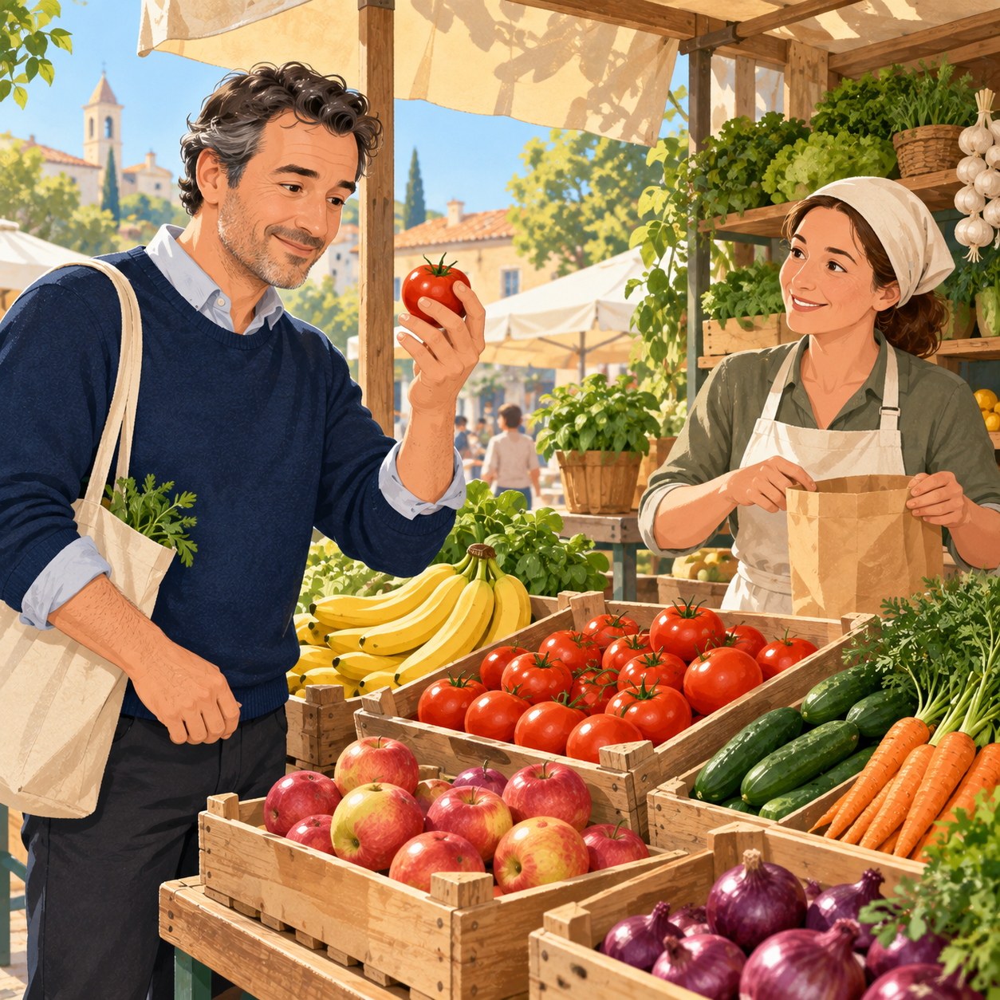
Teacher = FARMER. Student = CUSTOMER. Then swap.
Use: «Good morning!» · «A kilo of…, please» · «Are these ripe?» · «Can I taste one?» · «Not too soft, please» · «How much per kilo?» · «Card or cash?»
FarmerGood morning! What can I get you today?
Customer(say what you want: a kilo of tomatoes / half a kilo of apples / bunch of carrots)
FarmerRipe ones or firm?
Customer(ripe / firm + ask to taste one)
FarmerTry this one. Sweet, right?
Customer(react + ask the price per kilo)
FarmerAnything else? The lettuce is fresh today.
Customer(add / decline + ask cash or card)
8B · Role-play · At the deli counter
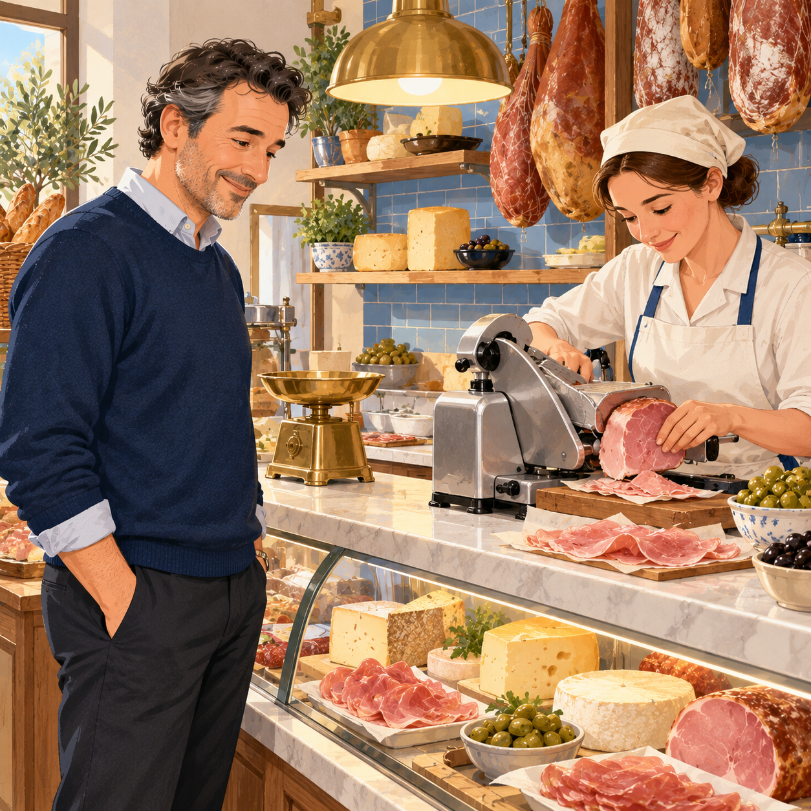
Use: «Half a kilo of…» · «Sliced thin, please» · «Can I have a taste?» · «Is this fresh today?» · «Anything else from the counter?»
AssistantGood morning! What can I get you from the counter?
Customer(order weight + food: 200 g of ham / half a kilo of cheese)
AssistantSliced thin or medium?
Customer(pick + ask for a taste of cheese)
AssistantAnything else? The salmon is fresh today.
Customer(yes/no + ask when it was delivered)
AssistantThat's ten pounds twenty. Take this ticket to the till.
Customer(thank + say goodbye politely)
8B+ · Role-play · Returning a bad item
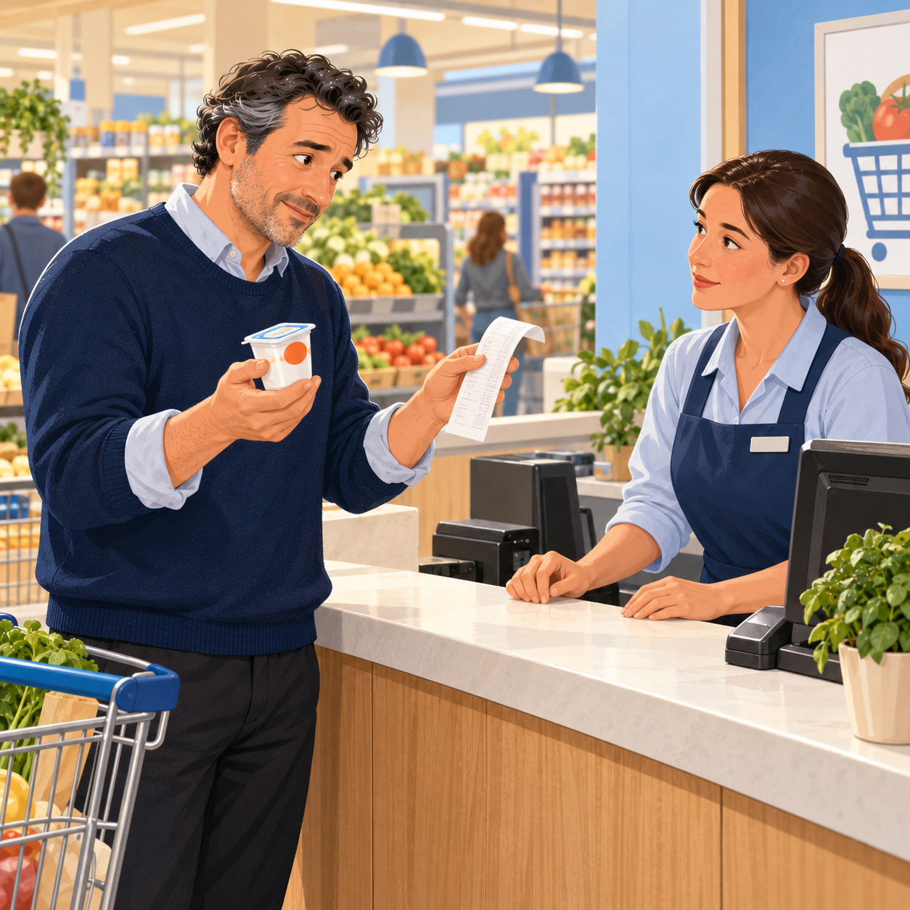
Use: «I'd like to return this» · «It's past the date» · «It smells off» · «Here's the receipt» · «Can I exchange it for…?» · «Refund or store credit?»
AssistantHi, how can I help?
Customer(explain: bought yoghurt yesterday, it's past the expiry date, would like a refund / exchange)
AssistantHave you got the receipt?
Customer(yes / no, explain why)
AssistantWould you like a refund or an exchange?
Customer(choose + reason)
AssistantOne moment, I'll speak to the manager.
Customer(polite reply — «take your time / no worries»)
8B++ · Role-play · Meeting a friend at the market
Use: «Are you free…?» · «Let's meet at the market» · «What time works for you?» · «Fancy cooking together after?»
Friend AHey! Are you free on Saturday morning?
Friend B (you)(reply: yes / no + why)
Friend ALet's meet at the farmers' market. The old one on Rozhdestvenka, or the new one at the park?
Friend B(pick one + reason)
Friend ACool. What time works for you?
Friend B(propose time + confirm)
Friend AOne more thing — fancy cooking a big Italian dinner together after? We can pick the ingredients at the market.
Friend B(yes/no + honest reason + suggest 1 dish)
8C · Role-play · Ordering delivery by phone
Use: «I'd like to place an order» · «Do you deliver to…?» · «What's the minimum order?» · «Can I book a slot for…?» · «No substitutes, please» · «Can I take your address?»
Shop clerkCornerhouse Grocers, good afternoon. How can I help?
Customer(say you'd like to place a delivery order + ask if they deliver to your area)
Shop clerkYes, we do. What time slot works?
Customer(pick a slot + list 4-5 items with quantities: a loaf of bread, 2 litres of milk, a kilo of potatoes, 6 eggs, a jar of honey)
Shop clerkAny substitutes if we're out of stock?
Customer(yes / no + why)
Shop clerkTotal is thirty-two pounds. Can I take your address?
Timer monologue · structure:opening («The topic I'll speak about is…») → 2-3 concrete details (food, place, price, feeling) → closing («That's why for me…»). No silence, no long pauses.
45
8D · Timer monologue · 45 seconds. Pick one topic and speak with no pauses:
1) My favourite dish · 2) My typical Saturday food routine · 3) My dream dinner party.
8E · Would you rather · 12 food pairs
1cook at home every dayoreat out every day
2big weekly shoporsmall daily shop
3farmers' marketoronline delivery
4hot street foodorsit-down restaurant
5cash at the marketorcard at the supermarket
6buy the cheapestorbuy the best quality
7meal plan for the whole weekordecide day-by-day
8cook fresh every dayorbatch cook on Sundays
9grow your own herbsorbuy them fresh
10eat leftoversorcook fresh every meal
11pay 20% more for organicorstick to normal
12same 10 dishes foreverortry a new recipe every week
Answer formula: «I'd rather X because…» / «For me, definitely Y — the reason is…» / «Honestly both, but if I have to pick — X.»
8F · Correct me! · 12 corrupted sentences
Typical errors to hunt: he don't → he doesn't · she have → she has · I am go → I am going · Does he works? → Does he work? · Where you buy → Where do you buy · often is → is often · much people → many people · like eat → like eating. Say your fix aloud before tapping.
Where did you go — supermarket, market, or delivery?
What was on your list? Did you forget anything?
How much did you spend altogether?
Any offers or discounts you took?
What will you cook this week with what you bought?
Chain 2 · «My fridge right now»
Open your mental fridge — what's on the top shelf?
What's in the fridge door?
Any leftovers you should have eaten by now?
Fresh fruit and veg — how much is left for this week?
If you had 500 ₽ for one shopping run today, what would you buy?
Chain 3 · «Cooking habits»
Do you cook every day, or only on weekends?
What's your signature dish — the one everyone loves?
What's your quick 15-minute dinner when you're tired?
Do you follow a recipe, or improvise?
What's one dish you'd love to learn but haven't yet?
Chain 4 · «Weekend food routine»
Saturday breakfast — same every week, or different?
Do you cook something special on Sundays?
Where do you get your bread on the weekend?
Do you eat out on the weekend, or always cook at home?
What's one weekend food ritual you never skip?
Chain 5 · «Ordering food delivery»
Do you order food delivery at all — restaurants or groceries?
Which app do you use most, and why?
What was the last thing you ordered?
Have you ever had a bad delivery — wrong item, cold, or late?
Would you tip the delivery driver? How much?
Exchange · big closing questions · pick 3 and go deep
Answer format:cliché → 2-3 sentences → because / for example. Minimum 45 seconds per question.
What's the best food you've bought recently? Tell the story.
What's the last food you had to throw away and regret buying?
Describe your ideal Sunday dinner — realistic, not fantasy.
Which of the three characters — Anna / Sergey / Maya — cooks food closest to yours?
If a friend from another country came to dinner, what would you cook?
What's one food habit you'd like to change this year — buy less, cook more, waste less?
09
Mini-glossary · 30 food words from today
Copy for yourself (or send in TG) — I'll add these to Quizlet.
How to review: read the word aloud with the IPA · read the definition · say the example sentence · then swap the example word for one from your own fridge.
EN
IPA
Short definition
Example
apple
/ˈæpl/
round green or red fruit
I eat an apple every morning.
tomato
/təˈmɑːtəʊ/
soft red salad fruit
A kilo of ripe tomatoes, please.
cucumber
/ˈkjuːkʌmbə/
long green veg for salad
One cucumber for the salad.
potato
/pəˈteɪtəʊ/
brown root vegetable
A kilo of potatoes for the roast.
carrot
/ˈkærət/
long orange root veg
Fresh carrots for the stew.
onion
/ˈʌnjən/
strong-smelling veg with layers
Two big onions for the soup.
lettuce
/ˈletɪs/
green leaves for salad
A head of lettuce, please.
banana
/bəˈnɑːnə/
long yellow fruit
A bunch of bananas for the week.
bread
/bred/
baked food from flour and water
A loaf of brown bread, please.
loaf
/ləʊf/
the whole bread, unsliced
Two loaves of sourdough.
cheese
/tʃiːz/
firm dairy food from milk
Half a kilo of yellow cheese.
milk
/mɪlk/
white liquid from a cow
A litre of semi-skimmed milk.
yoghurt
/ˈjɒɡət/
thick creamy dairy food
A carton of Greek yoghurt.
eggs
/eɡz/
oval food from a chicken
Six free-range eggs.
chicken
/ˈtʃɪkɪn/
white meat from a chicken
A kilo of chicken breasts.
ham
/hæm/
sliced pink pork meat
200 grams of ham, sliced thin.
butter
/ˈbʌtə/
yellow fat made from milk
A pack of salted butter.
honey
/ˈhʌni/
sweet thick food from bees
A small jar of honey.
jam
/dʒæm/
sweet spread from cooked fruit
A jar of strawberry jam.
pasta
/ˈpæstə/
Italian dry noodles / shapes
A packet of pasta for dinner.
rice
/raɪs/
small white grains, side dish
A bag of long-grain rice.
oil
/ɔɪl/
liquid fat for cooking
A bottle of olive oil.
sugar
/ˈʃʊɡə/
sweet white crystals
A bag of white sugar.
tea
/tiː/
hot drink from dry leaves
A box of English breakfast tea.
juice
/dʒuːs/
liquid squeezed from fruit
A carton of orange juice.
fresh
/freʃ/
not old, just made or picked
Is this salmon fresh today?
ripe
/raɪp/
ready to eat, fully grown
These tomatoes are nice and ripe.
kilo
/ˈkiːləʊ/
1 000 grams of weight
A kilo of potatoes, please.
litre
/ˈliːtə/
1 000 ml of liquid
One litre of milk.
receipt
/rɪˈsiːt/
paper proof of purchase
Would you like your receipt?
09+
📝 Written homework · 14 questions · your food-shopping habits
Answer each question in full sentences (minimum 2 lines). Type into the box, click Save. Your answers are stored on this device — either copy each one into Telegram or press Ctrl+P to save the whole page as a PDF.
Rule: use words and phrases from today's lesson. No bare «yes / no» — always add because / for example / actually + one detail.
01
How often do you go food shopping? Once a week, twice a week, or every day — describe your normal rhythm.
Use a frequency adverb: I usually … / I go food shopping … times a week.
02
Do you look for discounts on food? Give an example of the last discount you took.
I always / sometimes / never check for a discount. Last time I bought …
03
Where do you usually buy fresh produce — supermarket, market, or online? Why that one?
Usually I buy fruit and veg at … because …
04
Do you check expiry dates carefully, or grab and go? Any story of buying something past its date?
Use: expiry date · past the date · off · fresh today.
05
Card or cash for food shopping? Do you keep the receipts?
Use: cash desk · card · contactless · receipt.
06
Loyalty cards at food shops — do you collect points, or find them annoying? Which shops do you have a card for?
I have a loyalty card at … / I don't bother with loyalty cards because …
07
Do you take a shopping list, or buy on the spot? What do you always forget to buy?
I always / never take a shopping list. I usually forget …
08
Do you talk to the staff behind the deli or butcher's counter, or use self-checkout?
Actually, I prefer to … because …
09
Have you ever returned food or asked for a refund on food? What was it, and was the process easy or annoying?
Use: to return · the receipt · refund · exchange · past the date.
10
Your usual weekly food budget — do you stick to it? What blows it up when you go over?
My weekly food budget is about … · I usually stick to it / go over because …
11
How often do you go food shopping — every day, twice a week, or once a week for the whole week?
I go food shopping … times a week. Usually on … (day).
12
Supermarket, small local shop, or online delivery — what is your default for food? Why?
My default is … because … / I mix supermarket and online delivery.
13
What is in your fridge right now? Name 5 items using containers: a bottle of …, a jar of …, a packet of …, a tin of …, a loaf of ….
Right now in my fridge there is a bottle of milk, a jar of …, a packet of …, a tin of …, a loaf of ….
14
When you buy fresh fruit and vegetables, do you smell and touch them (like Sergey at the market), or do you just grab and go? Why?
Honestly, I … / For me it depends on … / Actually I never bother because …
When done: copy each answer with «Copy» → paste into Telegram to Maria, or press Ctrl+P to save the whole page with your answers as a PDF.
10
Homework · voice + reading
📚 3 speaking tasks (on top of the 14 typed questions above)
Voice-message · 60 seconds: tell me about your last supermarket run (what you bought, where you went, how much you paid). Minimum 5 verbs in Past Simple + 2 phrases about future food plans («I'm going to cook…»).
Mini-dialogue · 8 lines: write a food-shopping dialogue of your choice — greengrocer's / deli counter / delivery phone order. Send as text.
Read the 4 mini-readings aloud (Saturday shop / Farmers' market / Back home / Meal-plan Sunday) and write down 5-8 new food words with a short English definition. Voice-record one of the readings.
📐 After the lesson · Articles with food nouns · a / an / the / zero
Uncountable food (milk, bread, rice) mostly takes zero article. Do a couple of drills.